Префектура Киото · Киото · еда и напитки
Выпить днём в Киото: семь заведений, которые открываются задолго до вечера
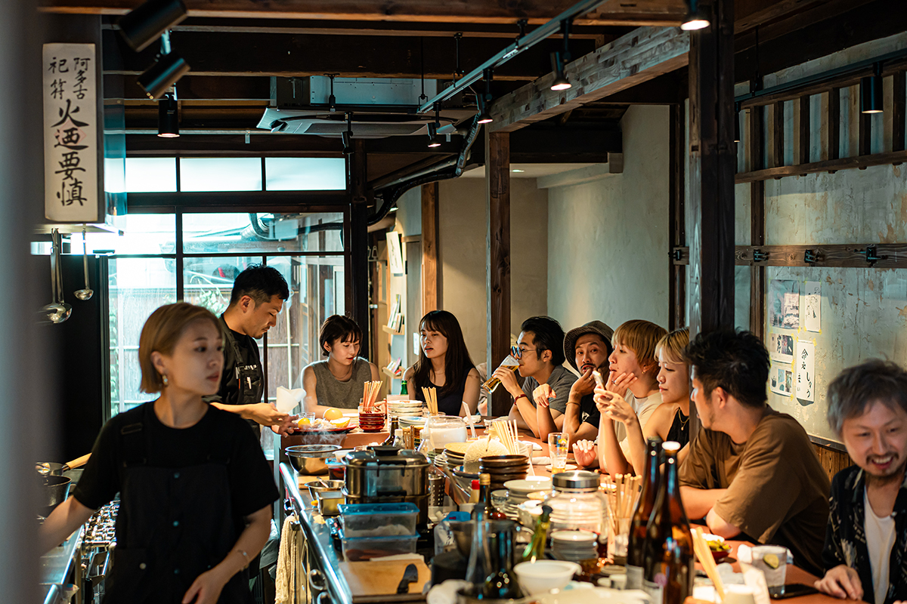
В Киото становится всё больше мест, где можно спокойно выпить задолго до вечера. Вот семь очень разных адресов: от закусочной в старом городском доме до кофейни, где вино наливают с девяти утра.
Идзакая
«Санбади»: полный зал в будний день
Закусочная открывается в 14:00, и вскоре почти все места заняты. Стоит она не в самом центре, а у перекрёстка улиц Каварамати и Маруттамати, и такая картина для неё обычный будний день.
«Пропустил обед, а пойти некуда. Вот было бы здорово, если бы в это время что-то работало»
хозяин закусочной
С этой мысли всё и началось. Хозяин и его жена раньше вместе работали в популярном баре у вокзала Киото, а в ноябре 2022 года открыли собственное заведение.
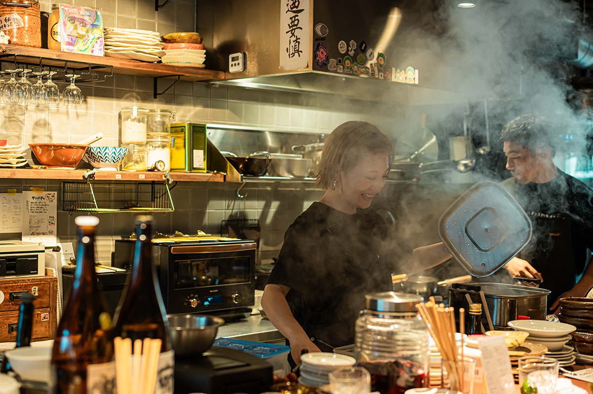
В меню есть домашние блюда вроде сюмая и салата из макарон, закуски с выдумкой, которые так и просят второй бокал, и свежая рыба. Вкус не уходит ни в японскую, ни в европейскую сторону и легко ложится на любой напиток. Выбор здесь широкий: пиво, сауэры, натуральное вино, сезонное сакэ.
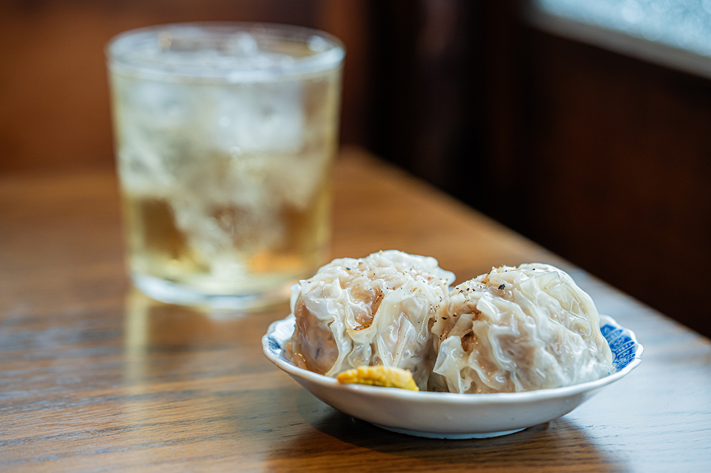
Закусочная занимает перестроенный дом матия, узкий и длинный, как это принято в Киото. В глубине есть крошечный внутренний садик, и днём туда падает мягкий свет. Мало кто заходит сюда на одну рюмку: от уюта гости садятся надолго, пьют и едят.
«В свой выходной днём я и сам ловлю себя на мысли: хорошо бы сходить в "Санбади". А потом вспоминаю: так это же мы!»
хозяин закусочной
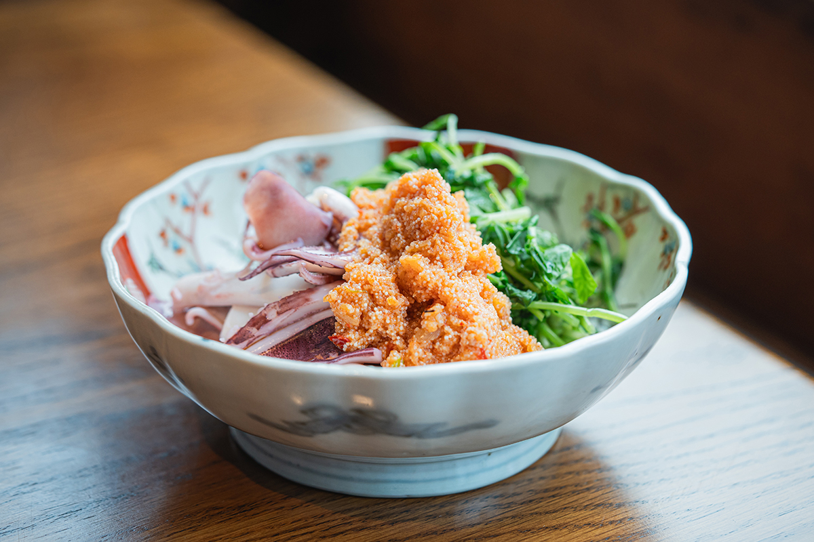
Ещё несколько позиций меню и цены 2023 года: тушёный бычий хвост от 1 500 иен, конфи из сардин, которые едят вместе с костями, 600 иен, ассорти из овощей, засоленных в рисовых отрубях, 400 иен. Разливное пиво, лимонный сауэр и бокал сакэ стоили от 600 иен.
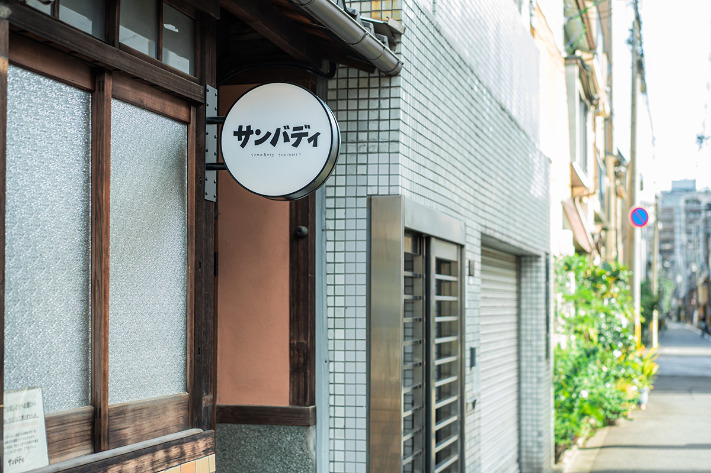
«Санбади»
- Адрес
- префектура Киото, Киото, Камигё-ку, Накамати-дори Маруттамати-сагару, Комано-тё, 548-1
- Телефон
- +81 75-278-3701
- Часы работы
- 14:00–21:00
- Выходные
- среда, бывают и другие нерегулярные
Вино
tardes: всё из растений
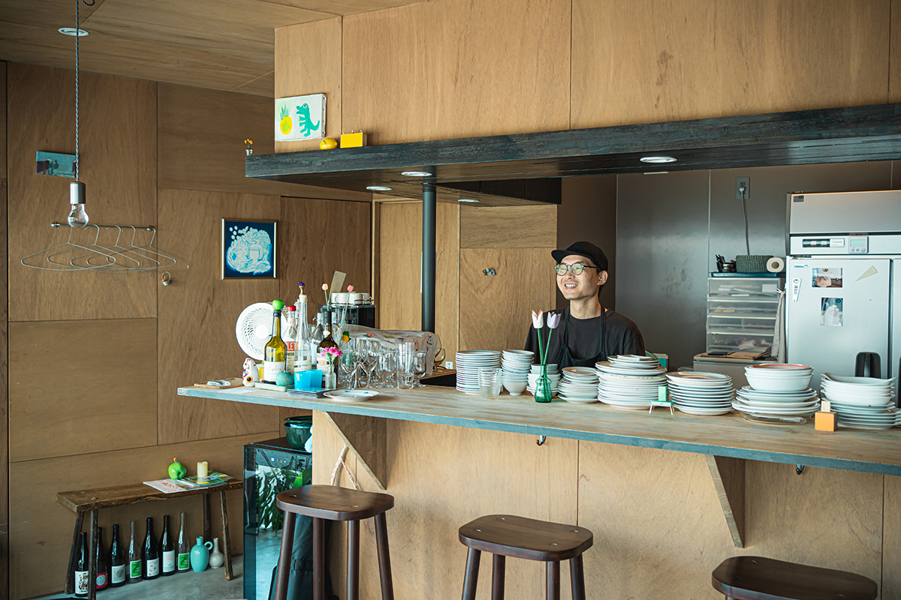
В тихом квартале Ёсида, совсем рядом с Киотским университетом, в марте 2023 года открылся винный бар tardes. По-португальски название означает «после полудня», и звучит оно очень уютно. На чёрной доске написаны понятные названия: гратен, спринг-роллы.
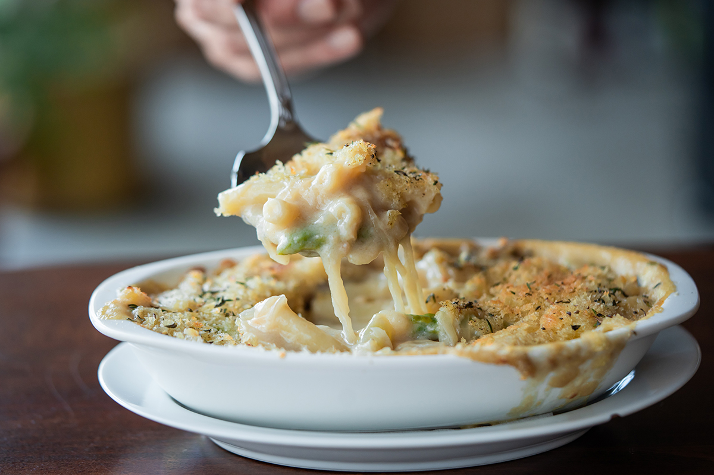
«Все блюда у нас на растительной основе», говорит хозяин. К этому стилю он пришёл, когда искал дело, которое можно вести долго и с чистой совестью. Процеженный соевый йогурт с кокосовым маслом превращается в подобие сливочного сыра, а мабо-тофу получает сложный вкус от томатов и сушёных грибов сиитакэ, выращенных на брёвнах. Ни молочного, ни мяса здесь нет, но аскетичной такую еду не назовёшь: порции сытные.
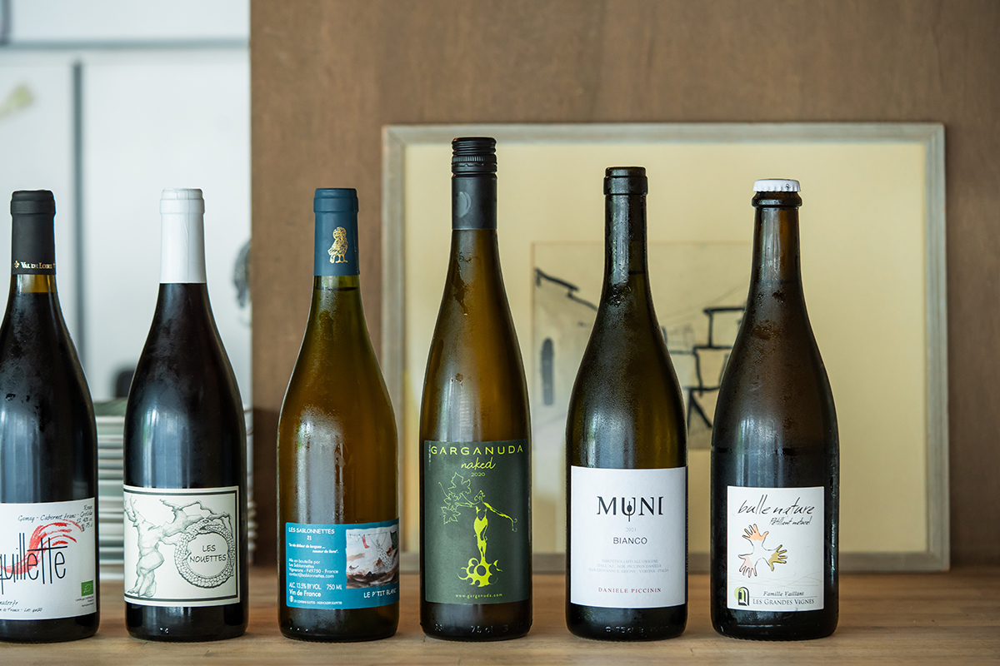
К еде подают натуральные вина, причём страна не важна: Франция, Италия, Германия. Около 80 процентов гостей выбирают белое. Лёгкое вино без шероховатостей перекликается с овощами и растительным молоком.
Бар работает с 15:00 без перерыва. «Мне самому хотелось места, куда можно зайти в промежутке между делами», объясняет хозяин. Нередко сюда заходят по одному и проводят время с бокалом вина, словно за поздним обедом.
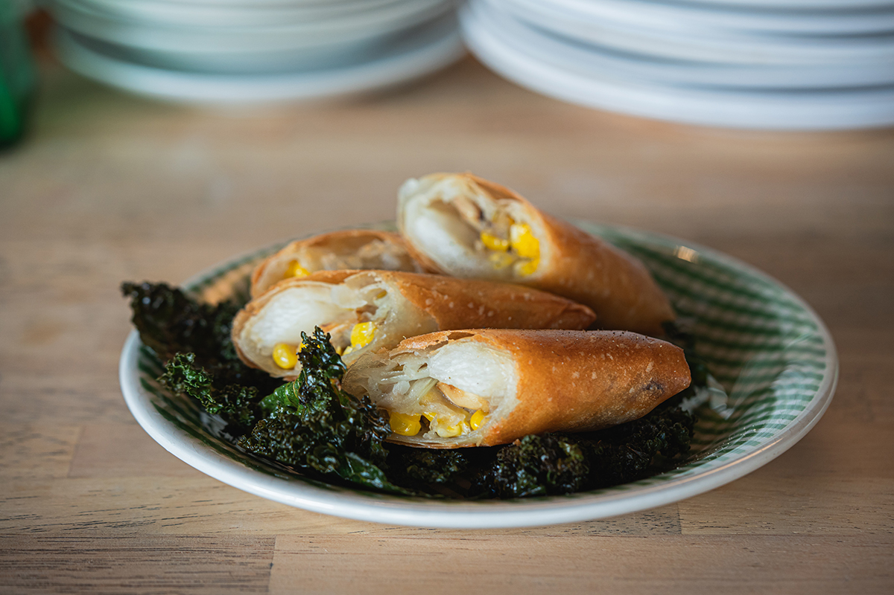
Ещё из меню 2023 года: ассорти закусок на двоих за 1 200 иен, мабо-тофу за 1 600 иен, картофельная галета за 800 иен. После ужина можно взять кальвадос или граппу, по 1 000 иен.
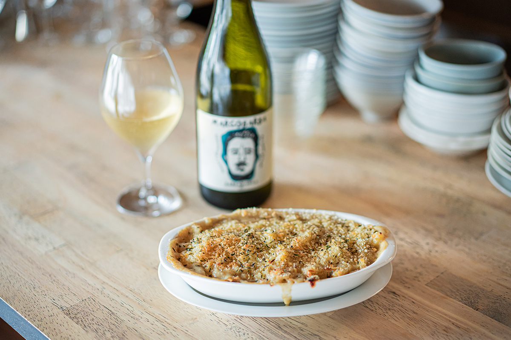
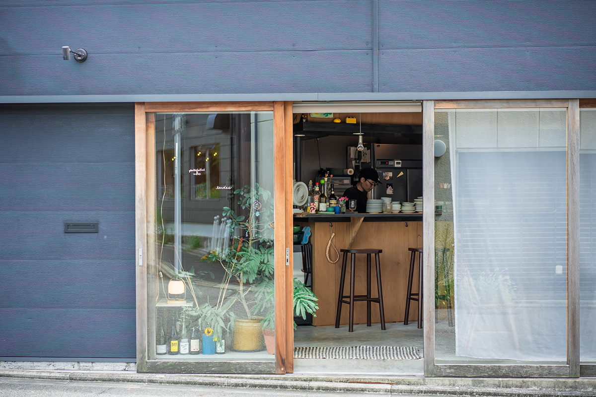
tardes
- Адрес
- префектура Киото, Киото, Сакё-ку, Ёсида-Хонмати, 2-2
- Телефон
- +81 80-4703-1667
- Часы работы
- 15:00–23:00 (последний заказ 21:30)
- Выходные
- вторник, бывают и другие нерегулярные
Кафе-бар
2éme MAISON: с полудня до позднего вечера
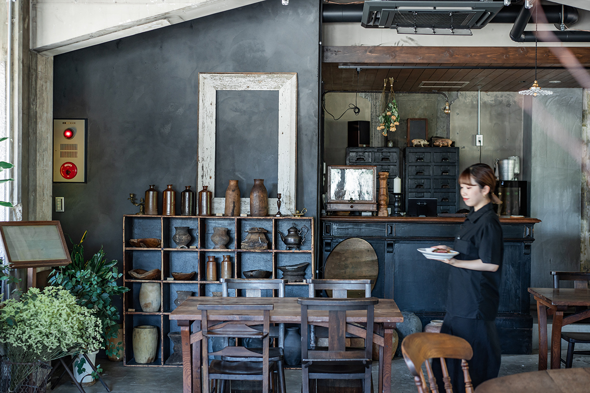
Первый этаж ретро-здания обставлен винтажными вещами и комнатными растениями, и выглядит всё очень стильно. Кафе открылось в июле 2022 года как младший брат магазина сухоцветов с кафе 1er ÉTAGE.
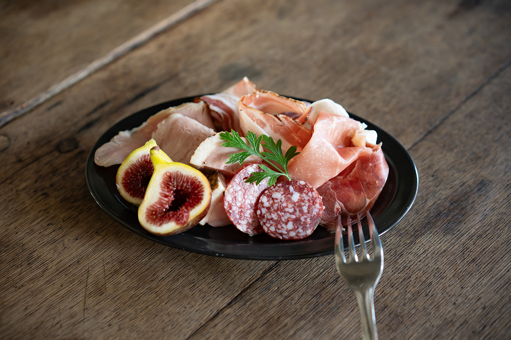
Главное достоинство заведения в его широте. Оно работает без перерыва с 12:00 до 23:00, а в меню есть и сытные сэндвичи со стейками, и удачные закуски вроде жареного халапеньо или тарелки ветчины. Пришёл на обед, а уходить уже не хочется, и обед плавно переходит в выпивку.
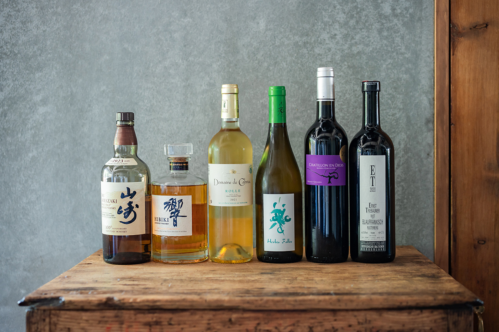
«Хочется, чтобы к нам заходили как в семейный ресторан, в любое удобное время. Мы стоим у моста Годзё-охаси, поэтому часто бывают и туристы»
владелец кафе
Шеф отточил мастерство в бистро, но не держится одного жанра и по вечерам иногда готовит обандзай, домашние киотские блюда. Напитки подобраны так же свободно: кроме вина есть виски и сётю. Сюда заходят, привлечённые стильным интерьером, а остаются ради простой еды и выпивки.
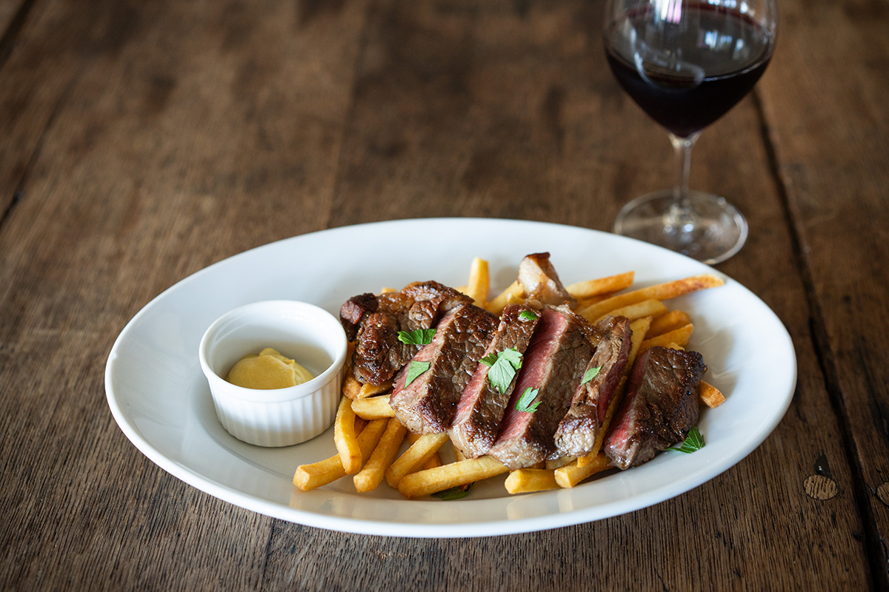
Ещё из меню 2023 года: картофель фри за 700 иен, морковный салат за 500 иен, тушёные в специях овощи с кускусом за 800 иен. Разливное пиво стоило 700 иен, хайбол и лимонный сауэр по 600 иен.
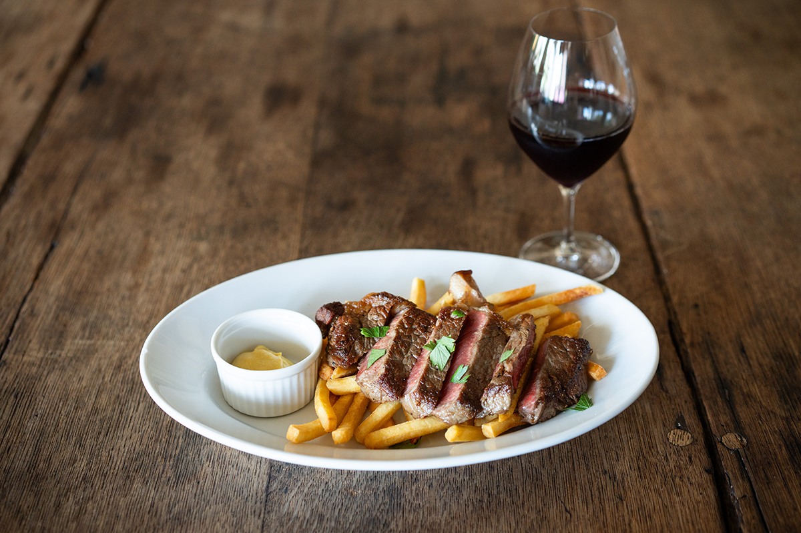
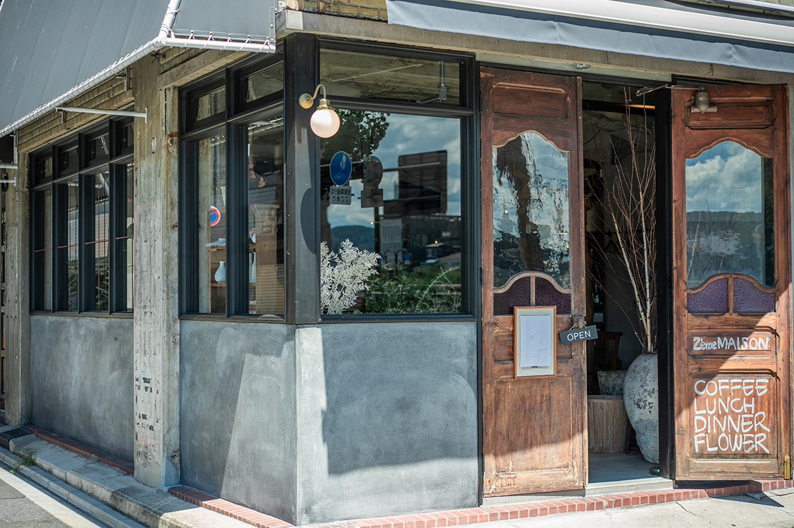
2éme MAISON
- Адрес
- префектура Киото, Киото, Симогё-ку, Тэрамати-дори Годзё-агару, Ниси-Хасидзумэ-тё, 794
- Телефон
- +81 50-3350-5877
- Часы работы
- 12:00–23:00
- Выходные
- среда
Вино и сакэ
bar bagliore: подвал у Маруттамати
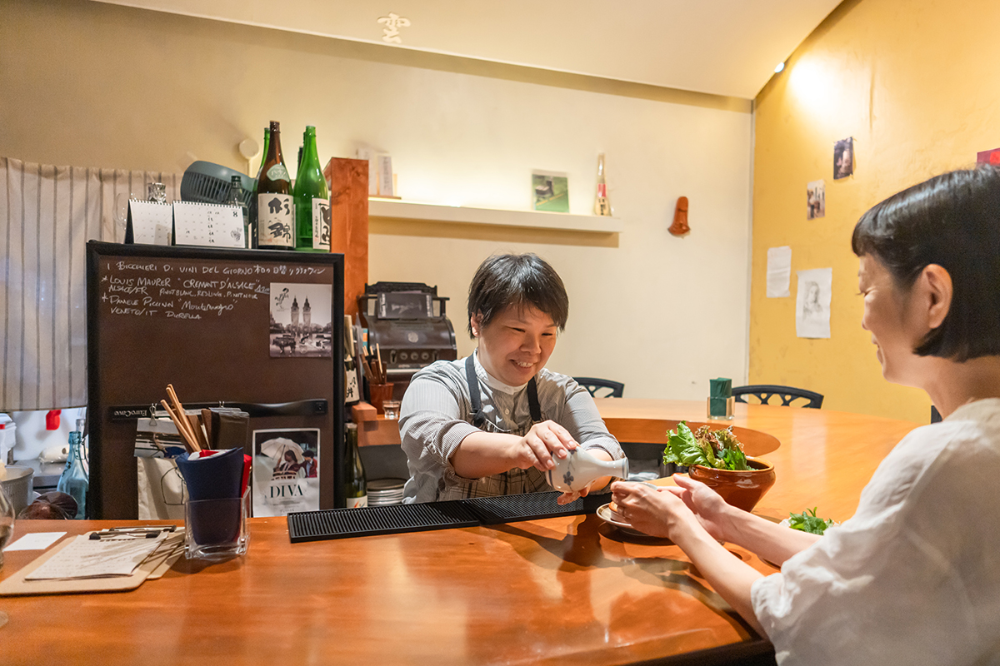
Этот винный бар прячется у того же перекрёстка Каварамати и Маруттамати. Хозяйка решила открываться в 15:00, потому что ей самой хотелось, чтобы в такое время было где выпить.
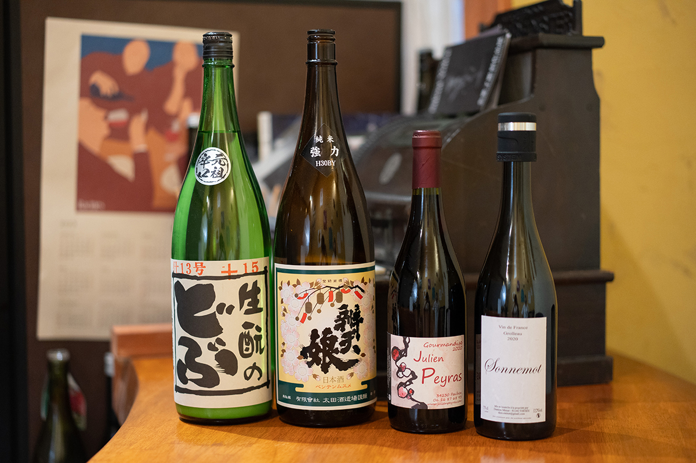
Хозяйка любит вина с плотным вкусом и стержнем, но не меньше любит сакэ. Когда-то она пила только вино, пока однажды не попробовала подогретое сакэ, сваренное старинным способом кимото, и оно её поразило.
«У него та же свобода кислоты и вкуса умами, что у вина, и пьётся оно так же легко. Такое сакэ я и наливаю»
хозяйка бара
Кухня здесь так же свободна от границ. Самое популярное блюдо это вьетнамские спринг-роллы на пару с приятно упругим тестом. Вино или сакэ? «С ними хорошо идёт и красное с Луары, у него есть овощные нотки», подсказывает хозяйка, и бокал пустеет сам собой. Ещё одна находка: густой итальянский суп из фасоли и злаков, сытный и при этом хороший под выпивку.
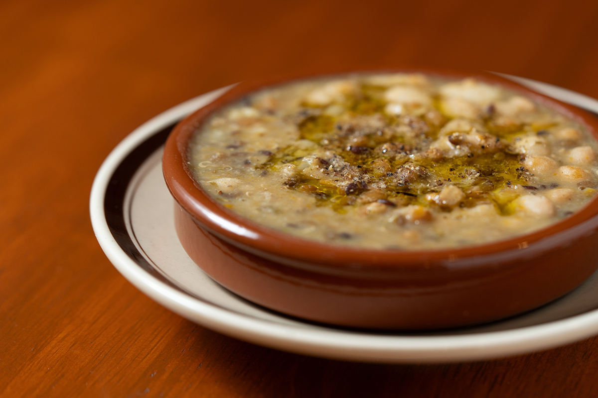
Ещё из меню 2023 года: варёное яйцо с сальсой верде из листьев сисо за 600 иен, пять варёных пельменей гёдза за 900 иен. Сакэ стоило около 1 000 иен, бокал вина от 1 000 иен, ликёрные вина и граппа после ужина от 1 200 иен.
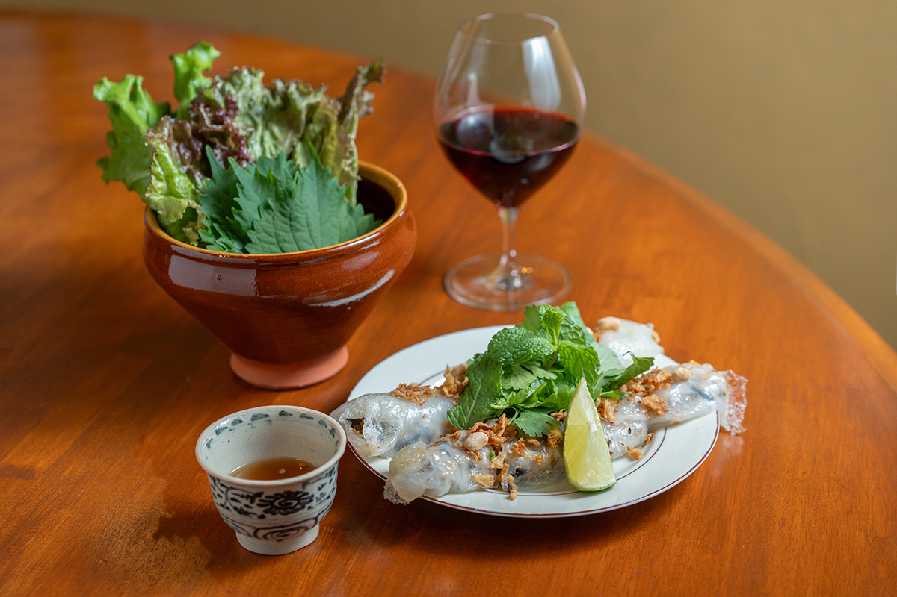
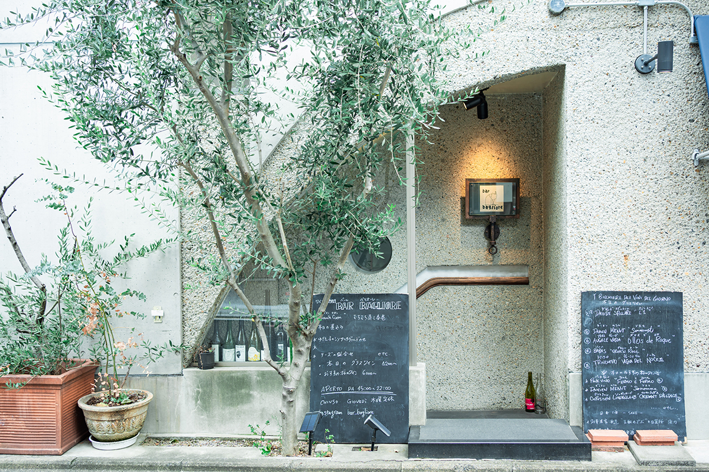
bar bagliore
- Адрес
- префектура Киото, Киото, Камигё-ку, Таварая-тё, 463-5, здание «Эруго», цокольный этаж
- Телефон
- нет
- Часы работы
- 15:00–21:30 (последний заказ)
- Выходные
- четверг, бывают и другие нерегулярные
Теппан
«Тоёкоя»: бабушкин рецепт на горячей плите
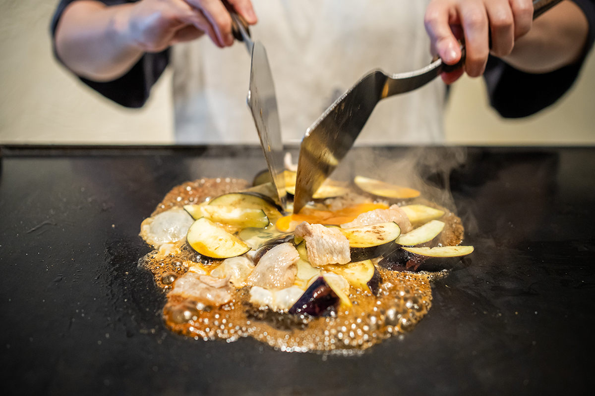
Продукты ложатся на раскалённую плиту прямо перед гостем, и всё шипит и пахнет. Под одно это уже можно пить, поэтому сначала наливаешь пиво в стакан. Ловкими движениями лопаток хозяйка за считанные минуты готовит жареные блюда и лапшу якисоба.
«Бабушка держала в городе заведение с теппаном, и я с детства ей помогала»
хозяйка заведения
Хозяйка мечтала о таком же месте, которое люди будут любить много лет, и в мае 2023 года открыла «Тоёкоя», назвав его в честь любимой бабушки. Заведение стоит рядом с мэрией Киото, добраться сюда легко, и оно быстро стало новым любимым адресом для дневной выпивки.
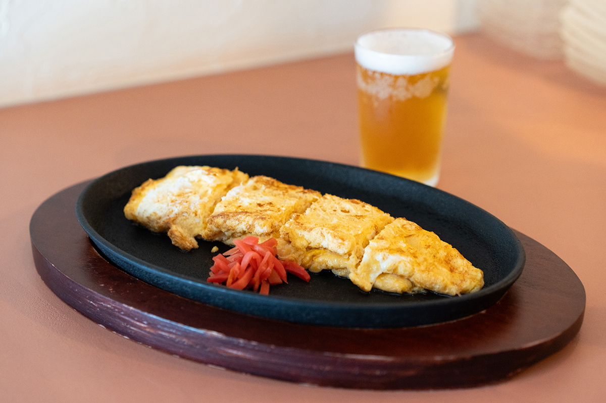
Одно из блюд, которое стоит заказать обязательно, это дасимаки, омлет с бульоном. На три яйца уходит много бульона, жидкую смесь выливают на плиту, собирают двумя лопатками и придают форму. Снаружи омлет покрыт ароматной корочкой, внутри сочный, и пиво к нему уходит быстро. Рецепт, конечно, бабушкин. Свинина с баклажанами, которую в конце смягчают яйцом, сладко-солёная и чем-то напоминает детство. Кроме блюд с плиты есть обандзай вроде тушёных овощей и отварной зелени, чтобы передохнуть между тарелками.
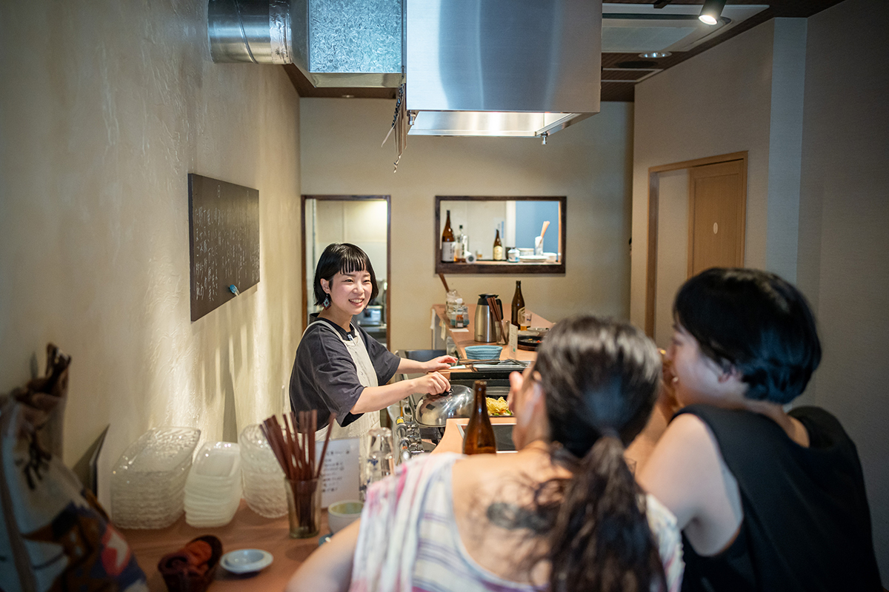
Ещё из меню 2023 года: красные сосиски за 500 иен, якисоба за 800 иен, то самое карри за 500 иен. Сакэ стоило 800 иен, ячменный или бататовый сётю 600 иен, сауэр с гранатовым уксусом 600 иен.
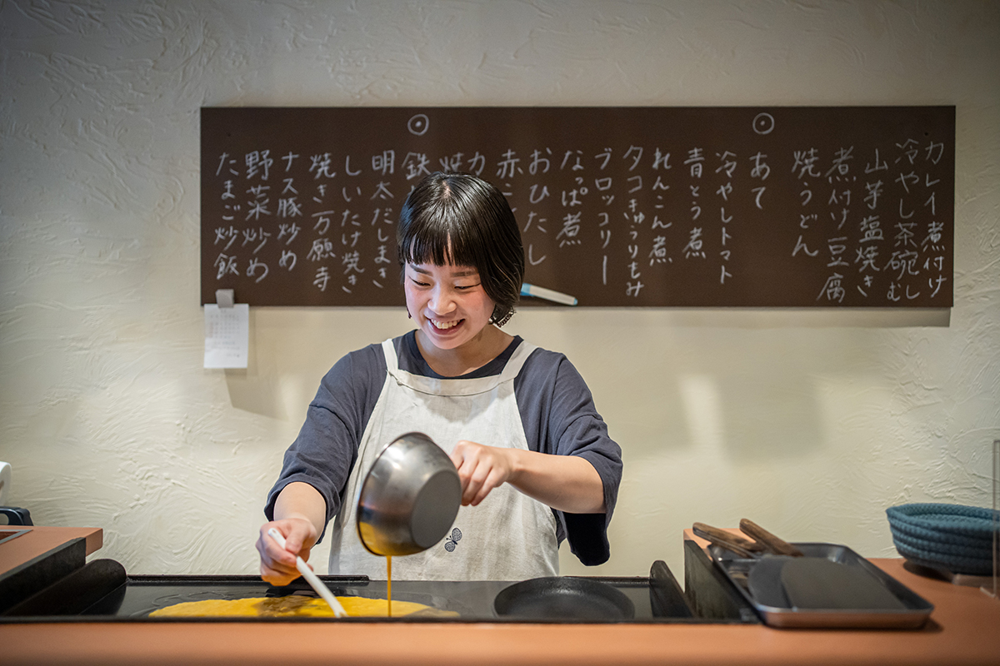
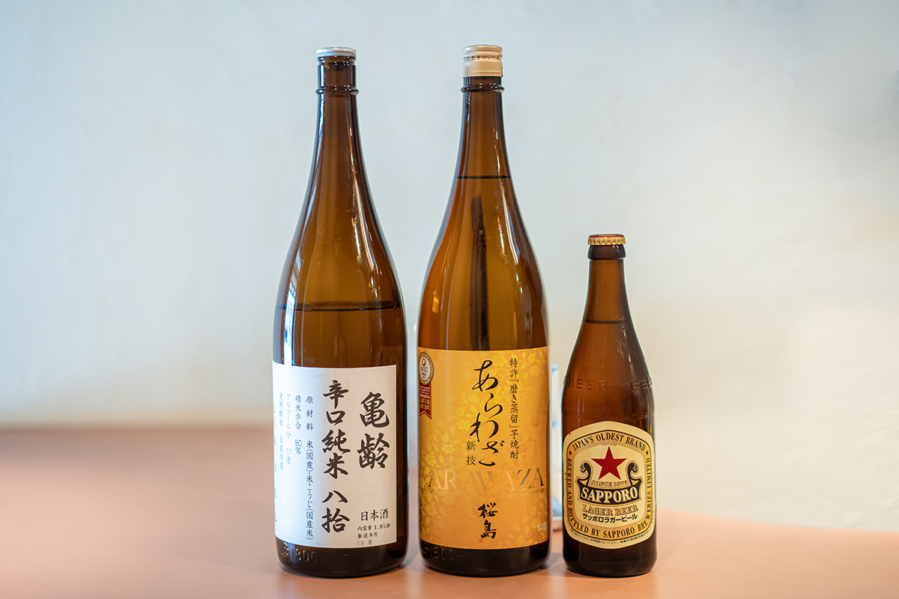
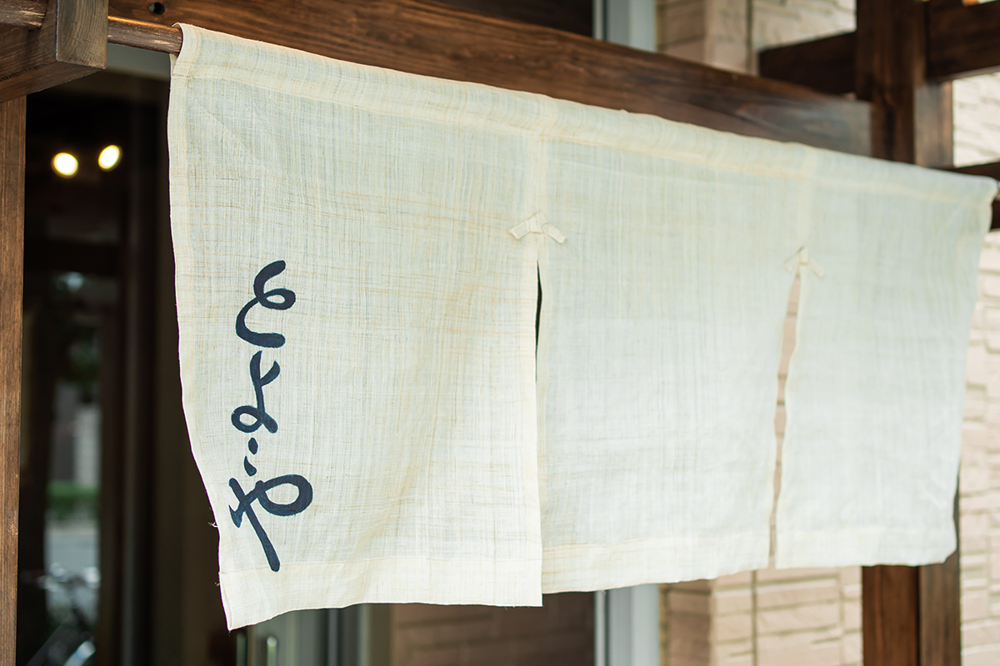
«Тоёкоя»
- Адрес
- префектура Киото, Киото, Накагё-ку, Каварамати-дори Нидзё-агару, Симидзу-тё, 352-4
- Телефон
- +81 75-211-2014
- Часы работы
- 14:00–21:00
- Выходные
- воскресенье, бывают и другие нерегулярные
Баранина
«Хоси-но тама»: мир, где всё о баранах
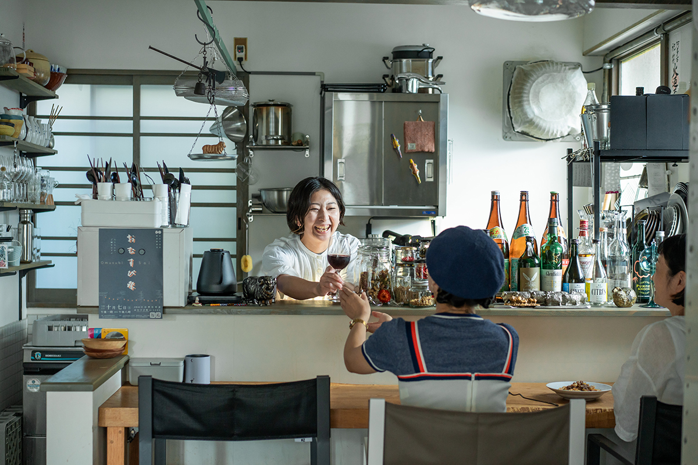
В зале пушистые овчины, фигурки баранов и даже книжная полка о баранах. А в меню баранина и мясо взрослых овец. Этот мир создала хозяйка, страстная поклонница баранов.
С баранами она познакомилась в художественном колледже: влюбилась в шерсть как материал для работы. «Хотелось знать о баранах всё, жить среди них», и со временем интерес перешёл от шерсти к мясу. Ей хотелось, чтобы баранину можно было попробовать просто и без церемоний, и в 2021 году она открыла своё заведение в спокойном районе Мото-Танака на северо-востоке Киото.
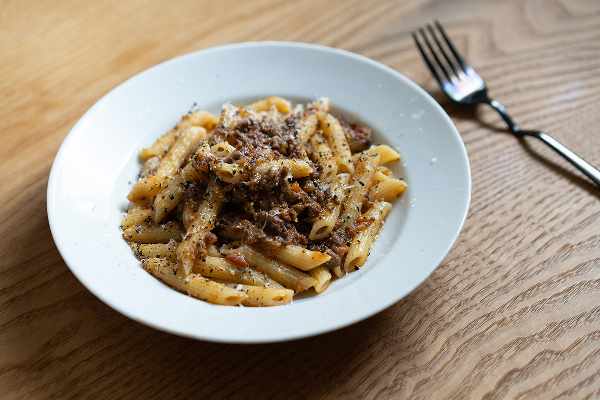
Первым стоит попробовать паштет из баранины. Хозяйка добивалась, чтобы его было легко есть: мясной вкус ягнёнка чувствуется хорошо, а послевкусие чистое. Кроме него баранину подают в рагу, в мясном мисо, в колбасках из ягнятины, каждый раз показывая её с новой стороны.
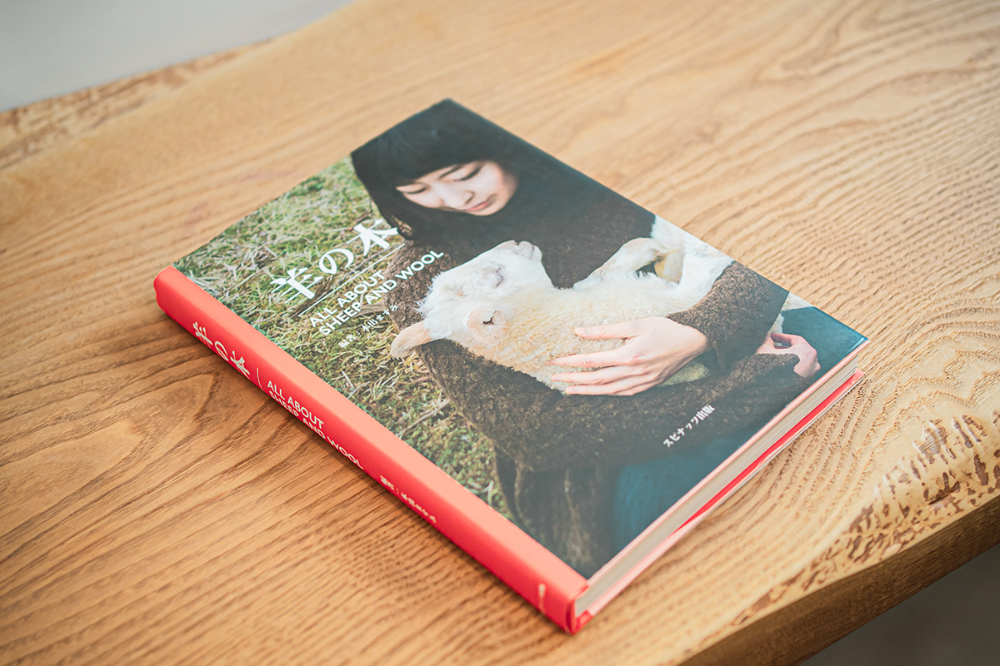
В зале много окон и много солнца, и выпивать здесь днём можно совершенно расслабленно. Сюда стоит зайти и тем, кто давно любит баранину, и тем, кто с ней почти не знаком.
Ещё из меню 2023 года: мясное мисо из баранины с огурцом за 600 иен, глазунья с солёной бараниной и сезонными овощами за 700 иен, сыр из овечьего молока с орехами за 750 иен. Маленькая бутылка пива стоила от 500 иен, бокал натурального вина 700 иен, ячменный сётю с чаем эрл грей 550 иен.
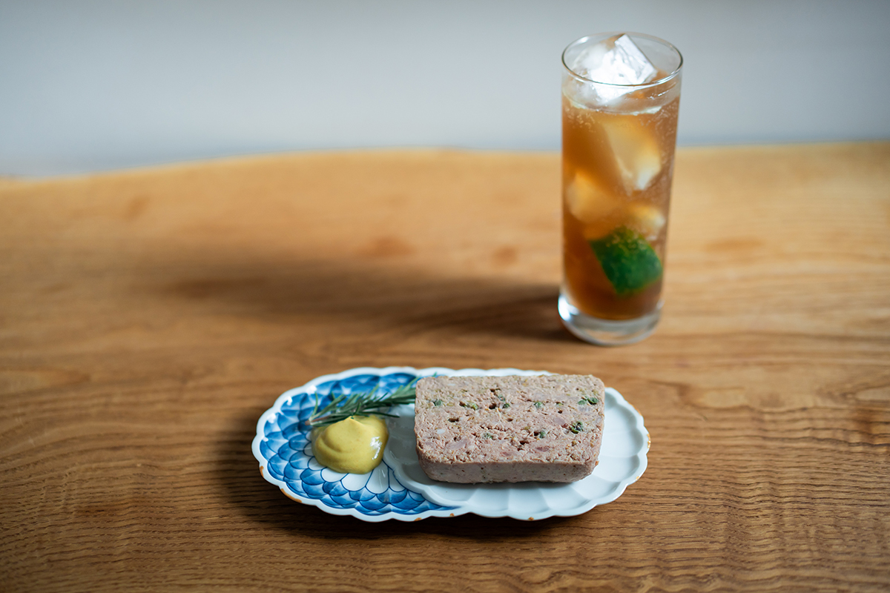
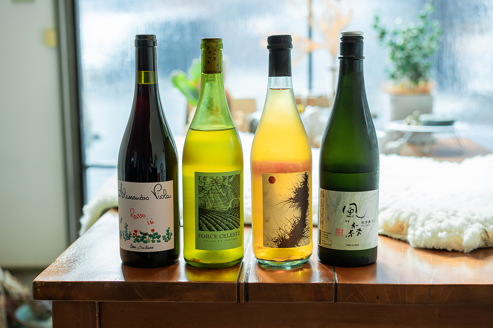
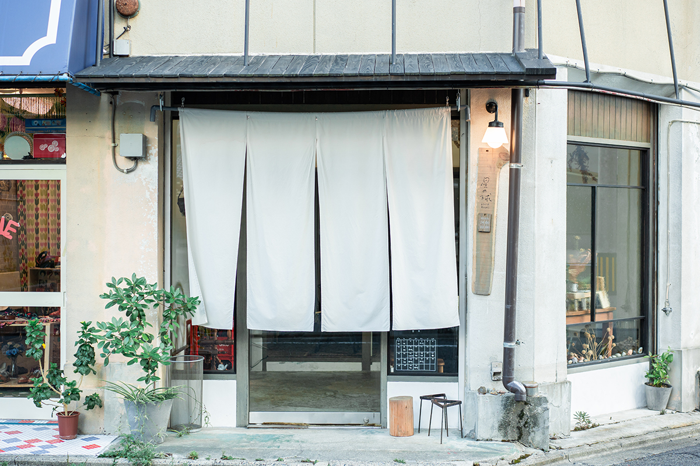
«Хоси-но тама»
- Адрес
- префектура Киото, Киото, Сакё-ку, Танака-Минами-Нисиура-тё, 73-11, дом «Сёфусо», 1-й этаж, южная сторона
- Телефон
- нет
- Часы работы
- 14:00–22:00 (последний заказ 21:00), время может меняться
- Выходные
- нерегулярные
Утро
ARCHI coffee and wine: вино с девяти утра
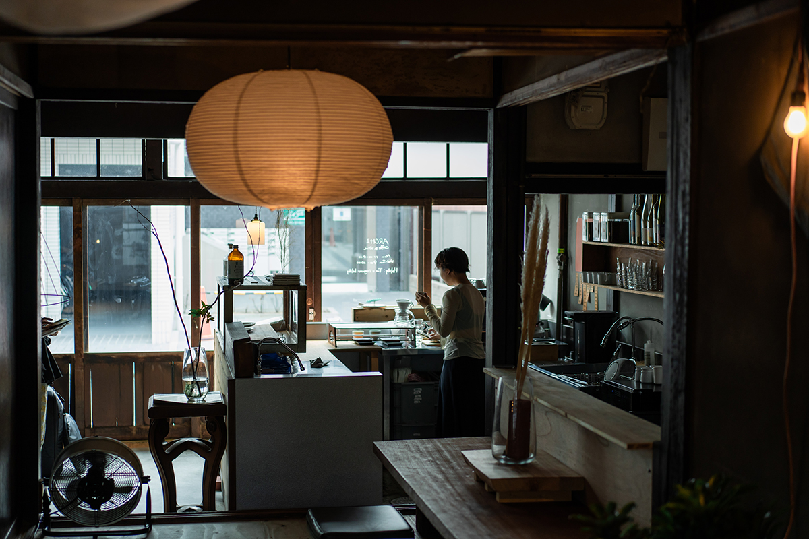
Квартал Мибу известен как место, связанное с отрядом самураев Синсэнгуми. В сентябре 2022 года здесь, в доме матия, которому больше 80 лет, открылось ARCHI coffee and wine: «кофе, вино и всё, что к ним подходит».
«Старые киотские дома понемногу исчезают. Конечно, мы ждём тех, кто их любит, но хочется, чтобы о них узнало как можно больше людей»
владелец кафе
Чтобы принимать гостей в таком месте, он выбрал кофе и вино, удовольствия, понятные во всём мире.
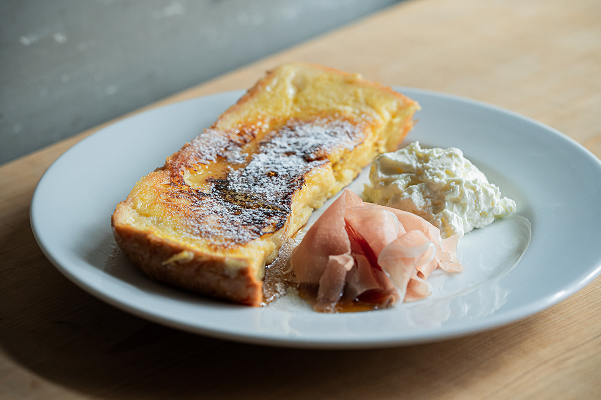
Кафе открывается в 9:00. Вокруг много гостевых домов, так что можно ожидать, что утром здесь пьют только кофе, но и бокал вина с раннего часа не редкость. «Мы держим натуральные вина с фруктовым вкусом, в меру сухие», говорит владелец. К ним неожиданно подходит французский тост: вместе с прошутто он даёт особый сладко-солёный вкус, а лёгкое красное его только усиливает. Можно устроить и «выпивку к полднику» с пудингом. Всё это в старом доме, который прожил вместе с городом не одно десятилетие.
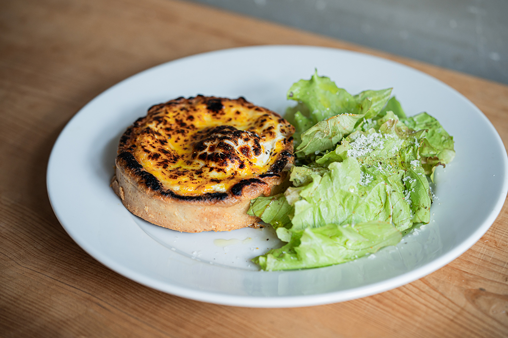
Ещё из меню 2023 года: открытый сэндвич на хлебе местной пекарни от 700 иен, буррата с сезонными фруктами и прошутто от 1 800 до 2 100 иен и домашний сюмай от 400 иен за две штуки (оба с 15:00). Натуральное вино стоило от 900 до 1 200 иен.
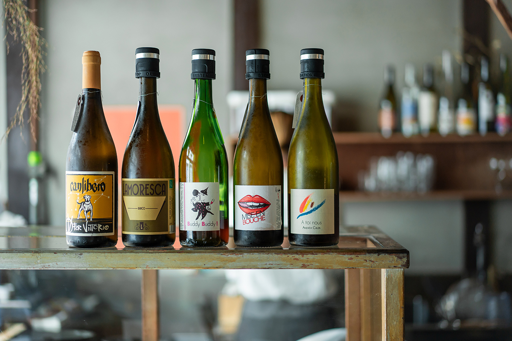
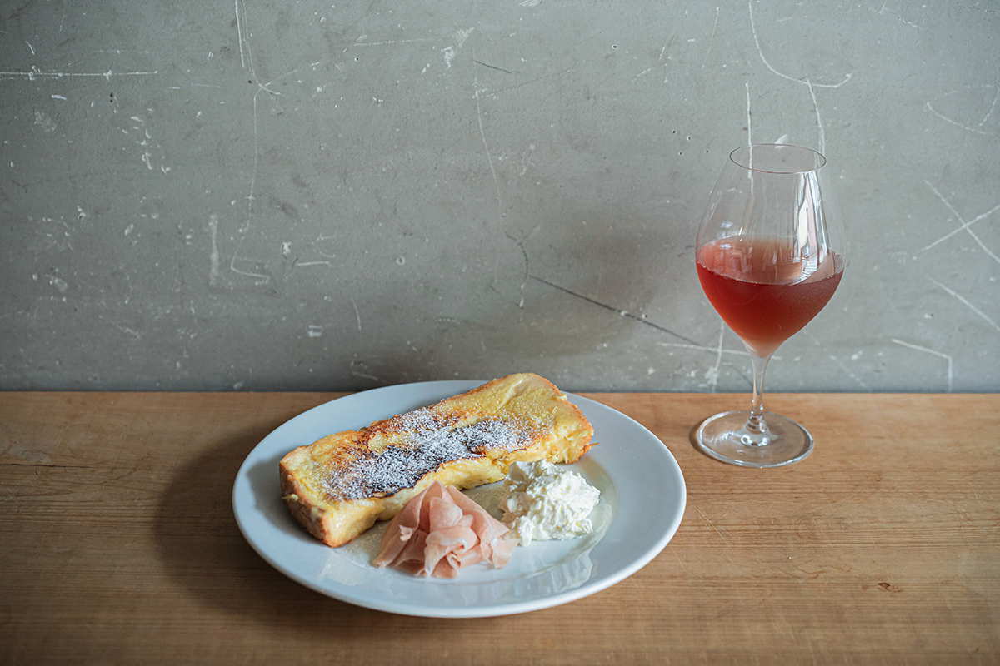
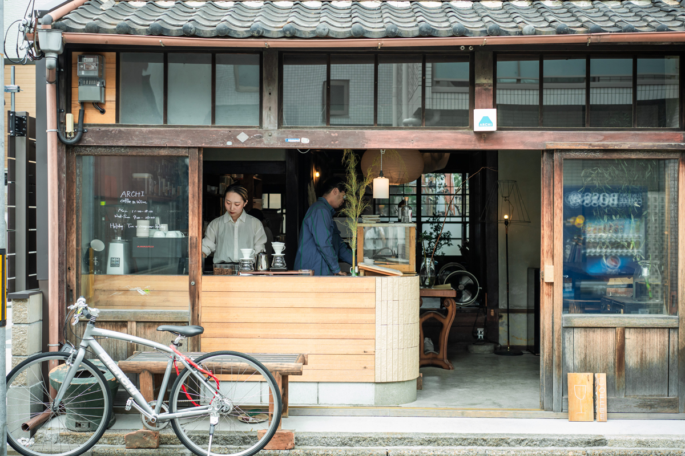
ARCHI coffee and wine
- Адрес
- префектура Киото, Киото, Накагё-ку, Мибу-Такахи-тё, 65-21
- Телефон
- нет
- Часы работы
- 9:00–20:00 (понедельник 11:00–18:00)
- Выходные
- вторник, бывают и другие нерегулярные
Фото: Рихо Накабэ.